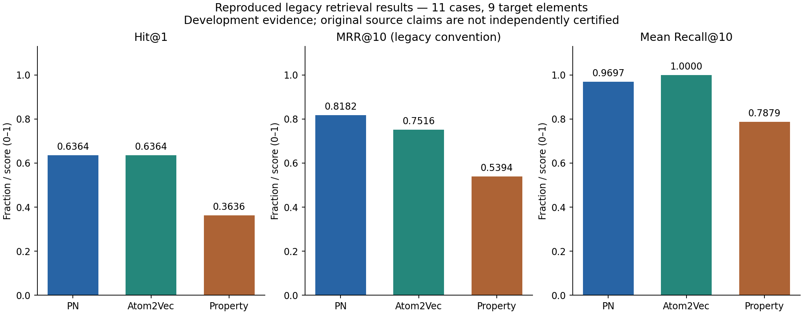
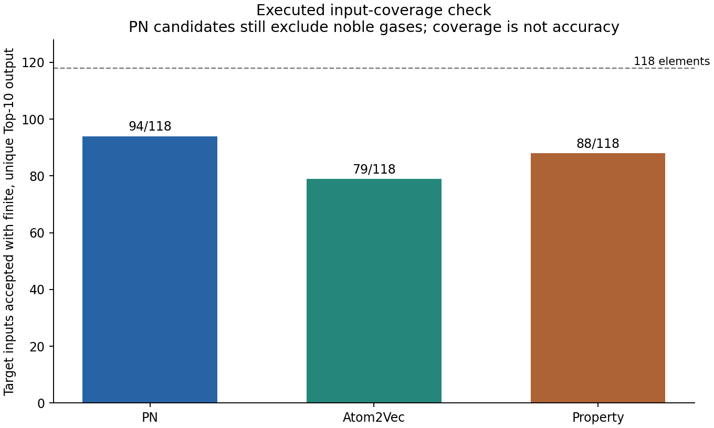
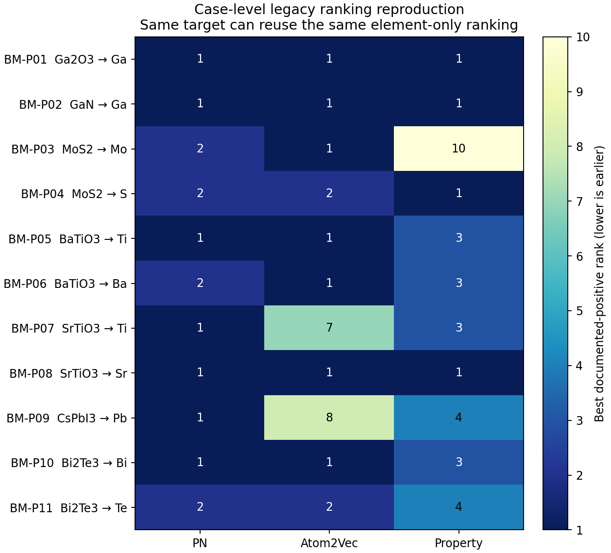

5 November 2026 | Local workspace: C:\Final Project | No production source or original results changed
26 original tests passed. 15 expanded diagnostic requirements failed. These findings remain open. Legacy outputs and fresh regeneration reproduced locally. Scientific benchmark claims are not fully certified. Next stage requires owner approval.
| Method | Hit@1 | Hit@3 | MRR@10 | Recall@10 |
|---|---|---|---|---|
| PN | 0.6364 | 1.0000 | 0.8182 | 0.9697 |
| Atom2Vec | 0.6364 | 0.8182 | 0.7516 | 1.0000 |
| Property | 0.3636 | 0.7273 | 0.5394 | 0.7879 |
Scores are fractions, not percentages. The benchmark contains 11 cases, 18 positive entries and 9 distinct target elements.



No playable Telugu audio was generated. A complete Telugu narration script is available above; the local speech engine exposes only an English voice.